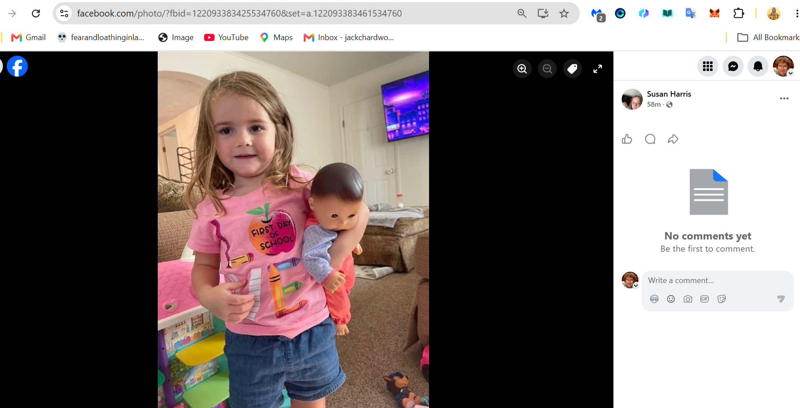
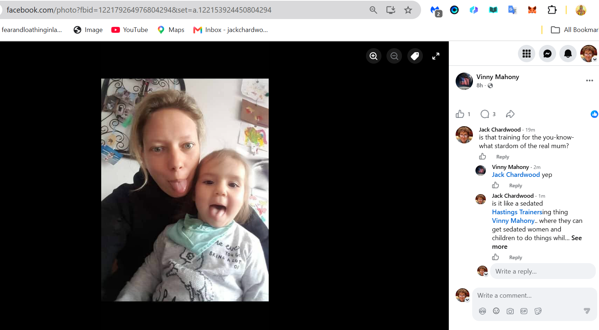
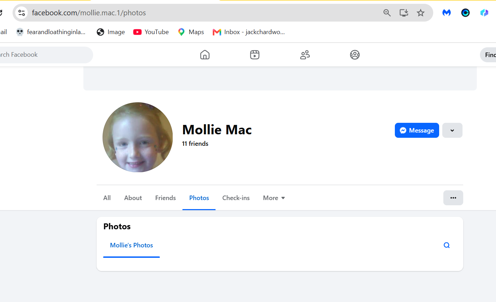
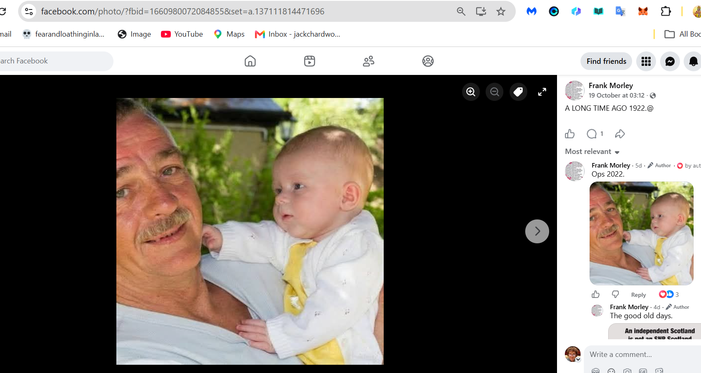
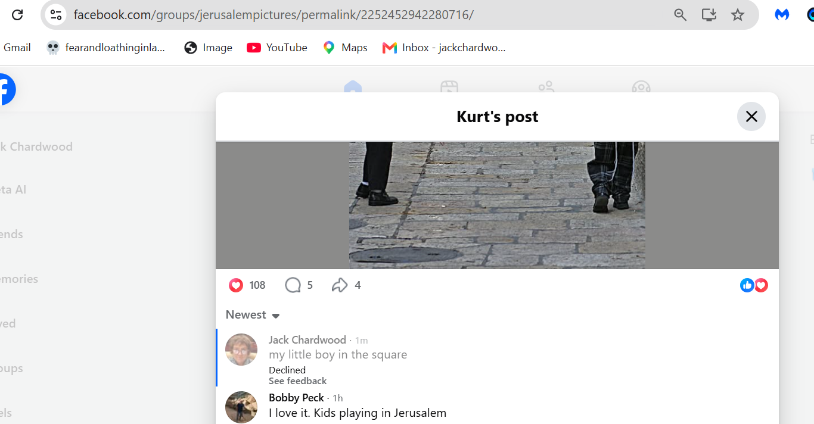

Possible children
- A lot of these children look so similar, like siblings.
- Please help now, these kids don't have time while the people looking after them are more interested in the fact their mother is the most famous sedated rape-porn star in the world.
Eight abortions stopped
- Were they scheduled and stopped because of my emails?
- I hope so.
- Now can we get the permanently in-danger ones to safety please as a matter of urgency. F**k the law.
Rumi/Gabriel with MONSTER parents
- The man involved in all this - Alaska-based, interesting - looks like the man in this profile.
A baby born to the German woman on the Loka Yoga YTT course
- 25th October 2026.
- And also a suggestion that she was murdered (drowned maybe).
- This means the buyer was probably on the course (there was one other woman who could've been pregnant, the British blond woman) and I expect it was the Arabian princess who was just married with an Arabian tech mogul apparently
Is she one of my children?
- She has my eyebrows.

Is this another?
- She also has my eyebrows.
- And my nose I just realized - one doesn't get to look at one's nose the whole time so it's not obvious to me. I expect it'll be VERY obvious to people who know me.
- Are there 33 children of mine in the world?

- Here she is again.

A lot of them look very similar
- Here's one being trained for rape-porn apparently, just like her mum was.

This one's got my teeth

- And eyes probably by the looks.
An ancient man
- Is this one of the porn addicts?
- Did he buy one of my babies because I'm famous in rape-porn?
- Is there a single reason she should be with him a nanosecond longer?

Is this small boy one of mine?

- There's a group who look like they have the same father too.
Is Anita Diamond's boy one of mine?
- They were all over me like scabies when I moved to Denia, the Diamond-spies were in 2006; immediately setting me up with Dave Porter and then Adrian.
- And in between that a trip to a hotel in the middle of nowhere near an American military base in the UK - they had a discount. We drove through Ickleford from Hitchen and one of the villages we drove through had bizarre 19 miles an hour speed limit signs which we all remarked on on the journey out, and back.
- The hotel had just opened, apparently, and there was no heating in our rooms. We stayed only one night. There was hot water, but no heating and it was freezing. Matthew made a huge point the next morning in private with me about detailing the letter of complaint he was going to write to the management to try and get his money back (ours, actually, I had paid half the price) and I heard nothing again about it.
- Interesting lack of heating, isn't it.
- Then Anita at Qredo talking "alignment" with the gypsies in 2021 when I was at Lourdes and they were setting me up for the big spy-cam porn show.
- I guess we'll find out. Soon. If you don't already know.

- If mine (and the others, like Steve and guruji's) children have been a "research project" of sorts, they might be even paying them to have one while they "research", i.e. poke, prod.. etc.
- It's unconscionable.
- I'm just wondering how Anita tells her son she deliberately led his true mother to what she very much knew would be her death by porn.
Ruth
- A tiny baby, conceived in or around May 2024, in Bali.
- I met her in June and September of 2025 in Jerusalem and have written about it.
The blond toddler who reached for me in the baths at Cauterets
- I have written about this instance of spy-flooding occurring in July/August 2025 when they were all over me in Cauterets, how they lied endlessly to me about Antonio going to Israel and being there for over a year until I saw him in Lourdes, and performing surgery at the same time and injuring me in the process - I bled for some days afterwards and thought it was period. It wasn't.
- Even though I had been noticing the keyhole scars for some time - unusual little things they are - the very idea that what was actually happening was a possibility in this world, that it could even be a thought in someone's head, was so far from the imagination, it took God Himself to tell me in August 2026 so I'd believe it.
- He told me other stuff too about this sort of thing, notably his connecting Parmarth Niketan to me and I believe it is because they have been doing the same to the guru there too, and to an even more hideously scaled-up level.
- As much as the leaves on a tree, She said today.
- It's much easier too, with sperm of course, you can get heaps of it all in one go.
Guruji, everyone and anyone famous
- It's gonna be a tidal wave of HELL TO PAY!
Nagarjuna in Kerala
- I became VERY suicidal all of a sudden on an ayurvedic retreat here.
- Dominic West was there at the same time, hopping around unusually, turning up at yoga in boxer shorts.
- When I asked one of the nurses about him, she went mute.
- I believe rape and surgery happened here, hence the intense and inexplicable depression.
- God told him he's going to prison too in a roundabout way.
- Does Dominic West have one of my children, or someone he's close to? Seems likely.
A live birth on 15th June 2023
- wip! too much, again
- This was the day Steve started the first course he'd done in Ireland since February 2020, and the first time I had seen him since then.
- The 12th June was my switcheroo "funeral" at the conservatory and later back at mine live-streamed to millions.
- I was reeling inside; I could hardly string thoughts together I was so traumatized.
- I thought it was because of the bullying at the conservatory but it was much, much more on top of constant drugging.
- AND I think I had started feeling my children by then too.
- I remember sitting listening to everyone, never speaking, thinking constantly about being pregnant and having children at the sessions throughout 2023-2026. It was always right there, front of mind.
- Triplets was a strong theme from 2023 too.
The beautiful boy in Tiferet Square
- Could he have been one? He was absolutely delightful and very interested in me.
- An extremely fair boy.
- I met him on my visit in August 2026.
- I'm getting a no on that one.

- It was an unusual moment though.